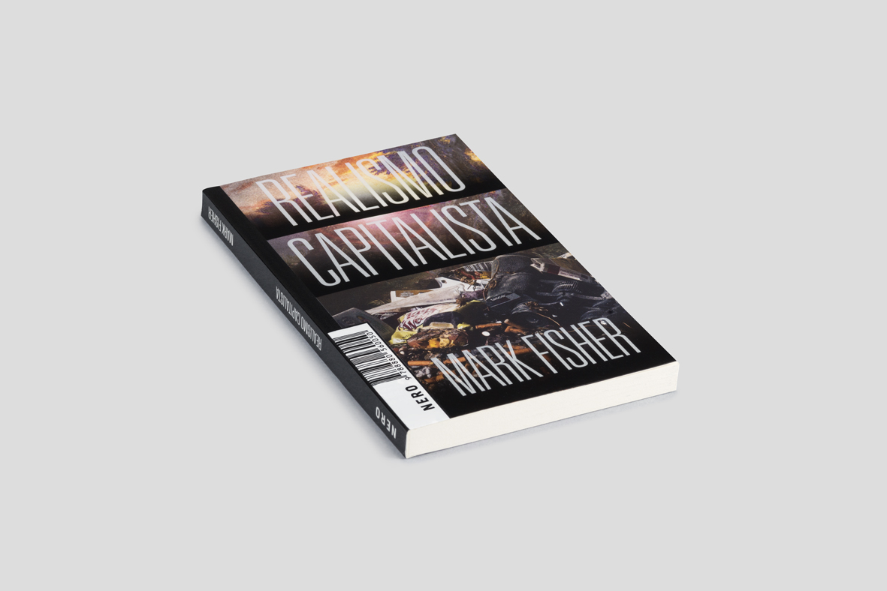
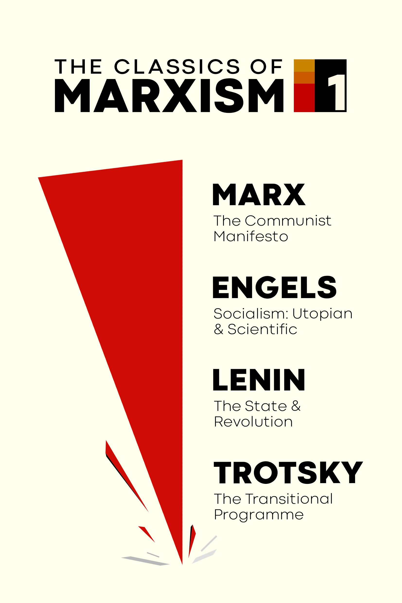
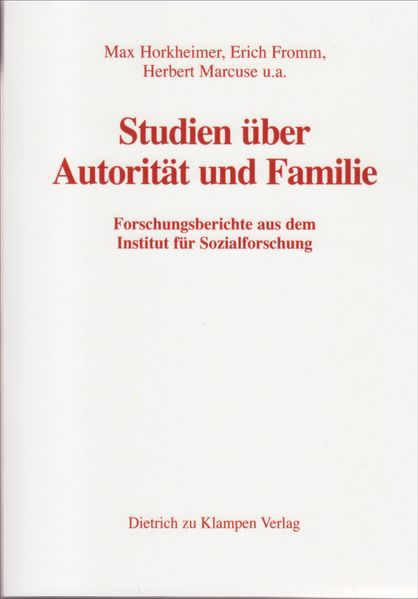
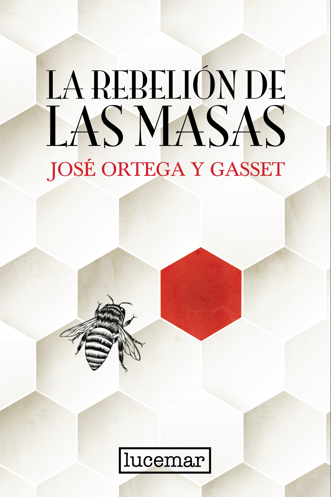
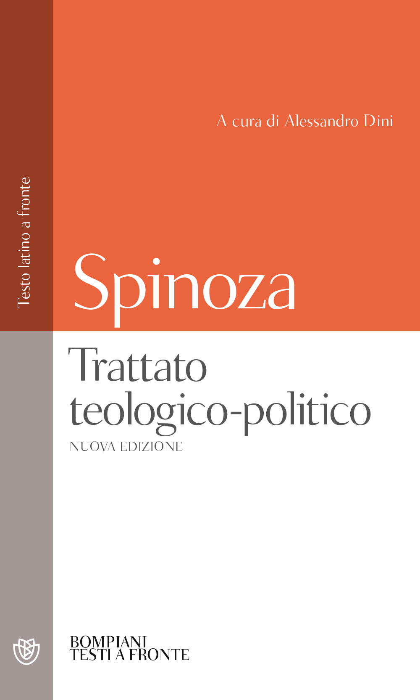
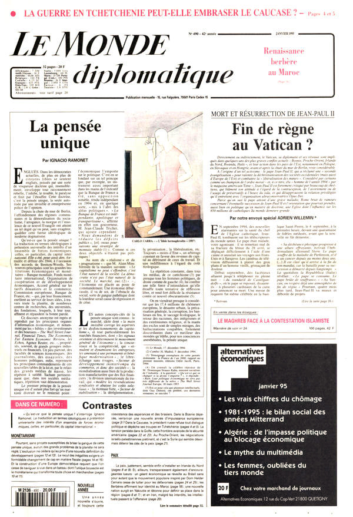
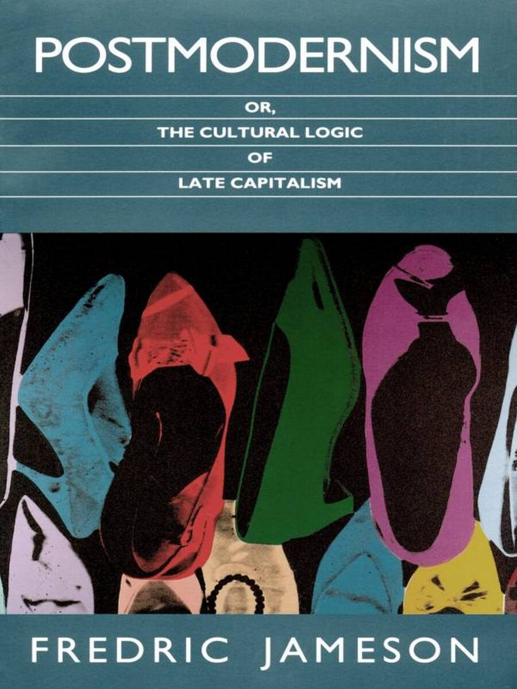
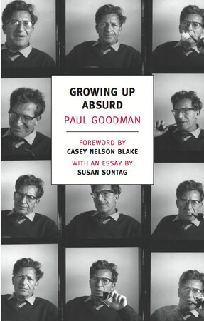

38:55 · 19 OPERE
Mark Fisher: dal postmodernismo cyberpunk al postcapitalismo.
Il filo del discorso
Il contributo legge un saggio dedicato a Mark Fisher e al realismo capitalista, inteso come la difficoltà di immaginare alternative a un ordinamento presentato come naturale e inevitabile. Il relatore collega Fisher alla critica dell’individuo ridotto alla dimensione economica e ricostruisce, secondo una propria interpretazione politica, il ruolo di Thatcher, Reagan, privatizzazioni e comunicazione di massa. Engels, Horkheimer, Marx, Kelsen e Spinoza forniscono riferimenti diversi per discutere autorità, libertà e trasformazione dei rapporti di potere in necessità impersonali. La caduta del blocco sovietico viene letta come perdita di un contrappeso alle oligarchie occidentali: questa è la tesi del saggio, non una spiegazione storica unica accertata. Il richiamo al pensiero unico di Ramonet conduce alla capacità dei media di rendere familiari e apparentemente ovvie determinate idee. Nella parte finale il discorso torna a Fisher: cultura popolare e cyberpunk, influenza di Jameson, simulazione burocratica della produttività, formazione scolastica orientata al lavoro e dimensione sociale del disagio mentale. Il confronto con Goodman, Fromm e Freud serve a distinguere il funzionamento di un sistema dal benessere delle persone che vi vivono. La conclusione valorizza la possibilità della critica culturale, senza trasformare la morte di Fisher in una spiegazione clinica o in una dimostrazione delle tesi politiche esposte.
I libri nel discorso

Realismo capitalista
Fotografia editoriale del volume NERO: NERO · Not, 2018 · traduzione Valerio Mattioli
Fotografia editoriale autentica del volume NERO: titolo, autore e marchio leggibili, copertina e dorso visibili. L’immagine raffigura la copertina del volume. L’edizione italiana è del 2018, non del 2009.
Fisher, titolo inglese e traduzione italiana NERO espliciti; distinta la prima inglese 2009 dall’italiana 2018.
Passaggio 0:47 ↗ · Fonti e libro ↗
L’uomo a una dimensione
Copertina: Einaudi, Piccola Biblioteca Einaudi, 1999
Copertina di un’edizione bibliografica dell’opera, con introduzione di Luciano Gallino. La citazione nel video resta probabile; questa edizione non vi è confermata.
Marcuse, individuo a una dimensione e anno 1964 espliciti.
Passaggio 1:15 ↗ · Fonti e libro ↗
L’evoluzione del socialismo dall’utopia alla scienza (Socialism: Utopian and Scientific)
Raccolta: The Classics of Marxism, volume I: Copertina della raccolta The Classics of Marxism: Volume One, Wellred Books, 2025, 310 pagine, ISBN 9781916936164; prima edizione della raccolta 2013. Contiene il saggio di Engels insieme a testi di Marx, Lenin e Trotsky.
Copertina autentica dell’editore, crema con figura rossa e nera; titolo del saggio di Engels leggibile fra i quattro testi. Non è una copertina autonoma del 1880 né un’edizione italiana attribuita al video. Il saggio deriva da tre capitoli dell’Anti-Dühring, rielaborati per la pubblicazione francese del 1880: non è l’intero Anti-Dühring.
Engels, L’evoluzione del socialismo dall’utopia alla scienza e 1880 espliciti.
Passaggio 6:55 ↗ · Fonti e libro ↗
Autorità e famiglia (Autorität und Familie, parte generale del 1936)
Raccolta: Studien über Autorität und Familie: Copertina della raccolta collettiva Studien über Autorität und Familie. Forschungsberichte aus dem Institut für Sozialforschung, zu Klampen, seconda edizione 2005, 954 pagine, ISBN 9783934920491. Horkheimer è autore della parte generale del volume originale del 1936, non di tutti i contributi.
Copertina autentica bianca, titoli rossi, nomi Horkheimer, Fromm, Marcuse e altri. L’immagine appartiene all’intero studio collettivo, mentre il riferimento della scheda riguarda il saggio di Horkheimer. L’epigrafe è attribuita dal relatore; traduzione italiana, pagina e formulazione letterale non sono certificate.
Horkheimer, Autorità e famiglia e 1936 espliciti; autore normalizzato dalla trascrizione automatica.
Passaggio 8:34 ↗ · Fonti e libro ↗
La ribellione delle masse (La rebelión de las masas)
Identificazione probabile
Copertina: Immagine dell’edizione spagnola Lucemar, catalogo Plutón, 19 febbraio 2026, 288 pagine, brossura. Opera pubblicata in volume nel 1930, dopo articoli del 1929.
Copertina autentica Lucemar, titolo nero e autore rosso su celle esagonali chiare, una cella rossa e un’ape. Edizione di riferimento 2026, non attribuita al filmato. I tentativi sul catalogo universitario e sull’immagine Planeta non hanno avuto esito; non si riporta il dato palesemente incongruo di tre pagine presente nella scheda Espasa.
Uomo massa / hombre masa e Ortega y Gasset espliciti; opera non pronunciata, collegamento tematico probabile.
Passaggio 9:57 ↗ · Fonti e libro ↗
Vangelo secondo Matteo
Identificazione probabile
Copertina del volume completo: San Paolo, 2014 · Nuova Versione dai Testi Antichi · edizione di riferimento
Vangelo secondo Matteo è un libro della Bibbia. L’immagine mostra il volume completo San Paolo di riferimento, non un’edizione autonoma del singolo libro e non una versione identificata nella citazione.
Chi perde la propria vita per causa mia la trova: riconoscibile nei paralleli Matteo 10,39 e 16,25, senza capitolo pronunciato.
Passaggio 12:23 ↗ · Fonti e libro ↗Manoscritti economico-filosofici del 1844
Copertina: Copertina Einaudi, Piccola biblioteca Einaudi, nuova serie, 2004, prefazione e traduzione di Norberto Bobbio, XIX + 177 pagine, ISBN 9788806169695. Il 1844 è la data di redazione dei manoscritti, non di questa edizione.
Copertina autentica grigia con due riquadri colorati, nome Karl Marx, titolo, cura Bobbio e marchio Einaudi. La frase è localizzabile nel capitolo Rendita fondiaria; il particolare esemplare e la traduzione materialmente usati dal relatore non sono identificati. Non confondere la paginazione 2004 con le precedenti edizioni Einaudi da XIX + 188 pagine.
Marx e Manoscritti espliciti, passo sulla materia morta riscontrabile in Rendita fondiaria del manoscritto 1844.
Passaggio 13:22 ↗ · Fonti e libro ↗Essenza e valore della democrazia
Fotografia del volume: Essenza e valore della democrazia: Fotografia del volume Giappichelli, 2004, cura di Agostino Carrino, 96 pagine nella scheda editoriale, ISBN 9788834845110. La raccolta comprende la prima versione del saggio del 1920 e altri scritti; l’opera ebbe una versione ampliata nel 1929.
Fotografia autentica fornita dall’editore: volume rosso e nero in prospettiva su fondo bianco, titolo e autore visibili. È dichiarata una fotografia, non una scansione piana. La voce non assegna automaticamente le citazioni alla versione del 1920 o a questa specifica edizione. Maggioranza, compromesso e tutela delle minoranze non coincidono con una autorizzazione illimitata a chi vince le elezioni.
Hans Kelsen ed Essenza e valore della democrazia espliciti; altro richiamo a 1136 secondi.
Passaggio 14:06 ↗ · Fonti e libro ↗
Trattato teologico-politico (Tractatus theologico-politicus)
Copertina: Copertina Bompiani, Il pensiero occidentale / Testi a fronte, nuova edizione 2021, cura di Alessandro Dini, 800 pagine, testo latino a fronte, ISBN 9788830106260. Opera originale pubblicata anonima nel 1670.
Copertina autentica dell’editore, arancione e bianca, nome Spinoza, titolo, curatore e marchio Bompiani. Opera distinta dal Trattato politico del 1677. Il richiamo alla libertà è riconoscibile nel capitolo XX, ma l’edizione letta nel video non viene identificata con quella illustrata.
Spinoza e Tractatus theologico-politicus espliciti; fine dello Stato come libertà.
Passaggio 14:40 ↗ · Fonti e libro ↗
Il castello (Das Schloss)
Identificazione probabile
Copertina: Suhrkamp, edizione tedesca in brossura, 423 pagine, prima uscita della collana 2006, ristampa 10 luglio 2025; romanzo pubblicato postumo nel 1926.
Immagine autentica dell’opera, controllata visivamente; l’edizione di riferimento non è attribuita al filmato.
Kafka e irraggiungibilità del castello: riferimento al romanzo per metafora, senza lettura di un passo.
Passaggio 16:37 ↗ · Fonti e libro ↗
Quaderni (Cahiers)
Volume I: Quaderni: Copertina del solo volume I, Adelphi, Biblioteca Adelphi 118, 1982, cura di Giancarlo Gaeta, 403 pagine, ISBN 9788845904837. I Quaderni sono un’opera in più volumi; l’immagine non identifica il volume della citazione.
Copertina autentica ocra della Biblioteca Adelphi, con disegno tratto da un quaderno di Weil e indicazione volume primo. È illustrato un volume dell’opera, senza sostenere che il passo citato si trovi in esso. La localizzazione della frase su potere e rivalità resta aperta; il titolo pronunciato dal relatore viene distinto dalla verifica della singola citazione.
Simone Weil e Quaderni espliciti; frase sul potere e sulla rivalità non localizzata in un volume.
Passaggio 23:10 ↗ · Fonti e libro ↗La tyrannie de la communication (La tirannide della comunicazione)
Copertina: Copertina Gallimard, Folio actuel 92, 21 novembre 2001, 304 pagine nel catalogo editoriale, ISBN 9782070418930. L’edizione francese Galilée è catalogata nel 1999, 200 pagine, ISBN 9782718605128; il 1998 citato nel video non identifica questa edizione.
Copertina dell’edizione Gallimard, collana Folio actuel. È l’edizione tascabile del 2001, non la prima francese né una edizione italiana dichiarata dal relatore.
Ramonet e titolo La tirannide della comunicazione espliciti; anno 1998 pronunciato senza edizione.
Passaggio 25:22 ↗ · Fonti e libro ↗Propagandes silencieuses. Masses, télévision, cinéma
Copertina: Copertina Gallimard, Folio actuel 98, 30 ottobre 2002, ISBN 9782070421305. L’edizione francese Galilée del 2000 è una versione riveduta e ampliata di un lavoro precedente; la copertina illustrata è successiva alla data citata.
Copertina dell’edizione Gallimard, collana Folio actuel, con un’immagine del manifesto Tarantula. Il manifesto riprodotto è parte della grafica del libro, non una locandina scambiata per la sua copertina. Non è attribuita al video la particolare edizione del 2002.
Titolo francese, traduzione descrittiva e 2000 espliciti.
Passaggio 25:29 ↗ · Fonti e libro ↗
La pensée unique (Il pensiero unico)
Prima pagina: Prima pagina del numero originale · gennaio 1995
È la prima pagina del periodico che contiene l’editoriale, non la copertina di un libro autonomo.
Articolo su Le Monde diplomatique del gennaio 1995, titolo pensée unique e autore espliciti.
Passaggio 25:40 ↗ · Fonti e libro ↗
Postmodernism, or, The Cultural Logic of Late Capitalism
Copertina: Copertina dell’edizione digitale Duke University Press, e ISBN 9780822378419, fornita da BiblioVault. Libro con copyright 1991; edizione paperback 1992 ISBN 9780822310907, prima edizione rilegata ISBN 9780822309291.
Copertina autentica blu petrolio, titolo e sottotitolo bianchi, immagine colorata e nome Fredric Jameson. È dichiarata l’immagine dell’edizione digitale, senza assegnarla al particolare esemplare del relatore. Il libro è distinto dal precedente saggio del 1984 sulla New Left Review e dalla nuova edizione autonoma di quel solo saggio annunciata nel 2026.
Fredric Jameson e titolo inglese Postmodernism, or, The Cultural Logic of Late Capitalism espliciti.
Passaggio 31:48 ↗ · Fonti e libro ↗
La gioventù assurda (Growing Up Absurd)
Copertina: Copertina Growing Up Absurd, NYRB Classics, 11 settembre 2012, 312 pagine, prefazione di Casey Nelson Blake e saggio di Susan Sontag, ISBN 9781590175811. Opera originale del 1960; edizione italiana Einaudi 1964, traduzione di Enza Franceschi Vaccarello.
Copertina piana autentica del distributore editoriale, con ripetizioni del ritratto di Goodman in bianco e nero e riquadro centrale bianco. Non è la copertina Einaudi né una edizione identificata nel contributo.
Paul Goodman e La gioventù assurda espliciti.
Passaggio 34:57 ↗ · Fonti e libro ↗
Psicanalisi della società contemporanea (The Sane Society)
Copertina: Copertina inglese The Sane Society, Routledge Classics, 2002, seconda edizione, 424 pagine nel catalogo editoriale, ISBN 9780415270984. Originale Rinehart 1955; prima edizione italiana Edizioni di Comunità 1960. Il 1964 pronunciato nel video può indicare una successiva edizione italiana.
Copertina autentica Routledge, tessitura verde e banda rossa con Fromm e titolo inglese. L’indice identifica il tema in Can a Society be Sick? The Pathology of Normalcy. La copertina inglese del 2002 non è attribuita all’edizione italiana del 1964.
Fromm e titolo espliciti dopo un passo sulla patologia di un’intera società; 1964 è anno pronunciato, non prima italiana.
Passaggio 35:17 ↗ · Fonti e libro ↗
Il disagio della civiltà
Copertina: Einaudi, 2010
Freud e Il disagio della civiltà espliciti.
Passaggio 36:49 ↗ · Fonti e libro ↗
Fuga dalla libertà
Copertina: Mondadori, 2022
Fromm e Fuga dalla libertà espliciti.
Passaggio 36:52 ↗ · Fonti e libro ↗